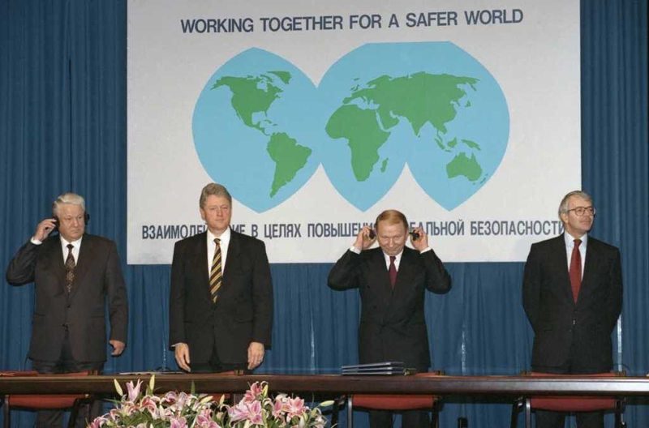
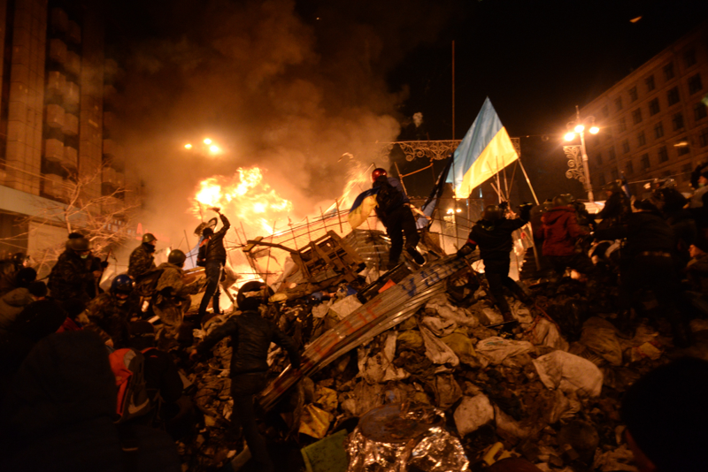
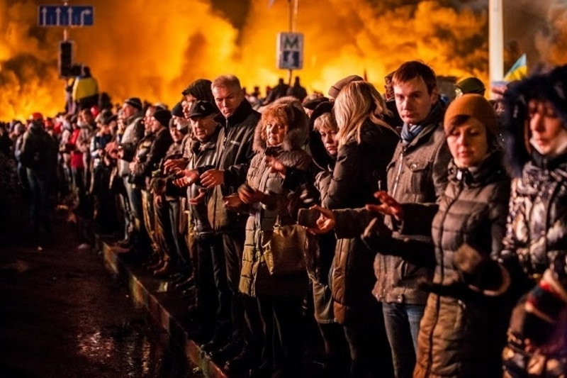
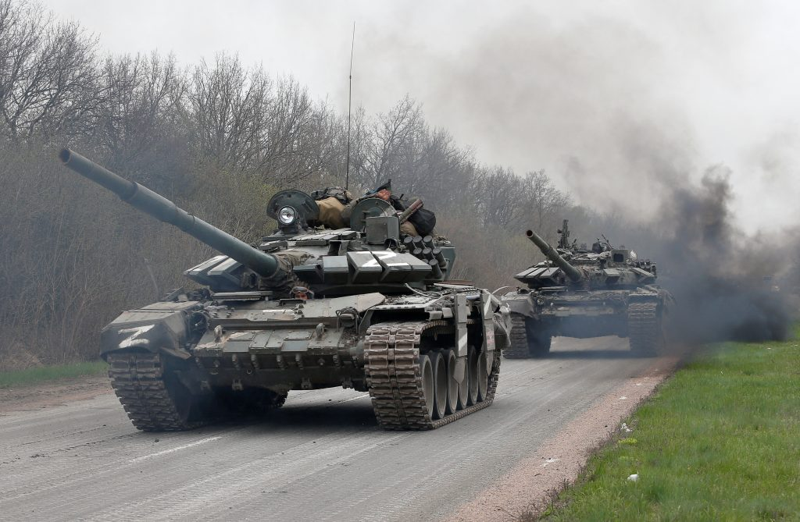

---------------------------------------------------------------------------------------------------------------
Prior to continuing into this section of history, I want to acknowledge that all previous sections were mere history projects for information, this section is deeper. I will be covering the topics of a modern war, an attempted genocide, an insult to human rights and a challenge to self determination. This will be a personal page for me, as I will express predictions, opinions, and the synthesis thoughts of research. The events of the past decade are more important than any historical point up until now, and the events today in regards to this conflict, will have far reaching and highly influencial in the trajectory of human history, as this isn't a fight for Ukraine alone, this is a fight for an ideology, a fight millions died for, a fight to protect the dream of our grandparents that we can be better.
the first real independance Ukraine has enjoyed since the ancient state of the Kiyevan Russ happened in 1991, as the
soviet union collapsed, Ukraine alongside all other Eastern block European nations delcared independance. This was
made official by a referendum, in which 90% of voters were in favour of independance, including the recently
declared Ukrainian Crimea, where 56% of voters were in favour.
The former leader of soviet Ukraine, Leonid Kravchuk,
was elected Ukraines first president. In the time after independance was declared, Ukraine had close relations with
Russia, with cooperation in the black sea (including military and commerce), pipelines, etc. Most notably, Ukraine
inherited the worlds third largest nuclear arsenal as soviet legacy.
There were many nuances with nuclear weapons,
the launch codes were still in Russian control, so Ukraine had no of launching them at the time, on top of which
there was a strong incentive by the United states, Britain, and Russia to give them up in exchange for economic
integration & support, and security assurences. So the Budapest Memorandum was signed, where Ukraine gave up it
nuclear arsenal to Russia, and destroyed nuclear infarstructure in exchange for security assurences by all involved
parties.

Current events put into question the validity of such contracts, and trust in Western integration and defensive structures.
Not only did Russia break this deal outright, but the UK and US who are both under contract obligation to militarily
defend Ukraine have done all but that. Not only did the Obama and bush administrations outright refuse lethal aid, never
mind honoring the deal they signed, but now after years of crimes against humanity and against the global order of peace,
the United States is growing anti Ukraine sentiment, appeasing Putin, and being hostile to Ukraine. This is dangerous,
for this shows the dictators of the world that the promises of the Western defence alleicne are empty, and as long as
they make a big enough fuss, they'll get what they want.
2014 was the spark that set off the fire of war between Russia and Ukraine in the 21st century. The elected president
Victor Yanukovitch under preassure from Russia, abandoned an association agreement that would bring Ukraine into the
EU sphere. This outraged the Ukrainian people who saw this as a betrayal, which is what sparked the Euromaidan revolution.

I remember bits and pieces of this time as a child, but I couldn't possibly understand what was happening then. In the
city center road, where there would be military parades, and celebrations of national pride, towering over which was
the independance monument, which is poetic. A peacefull protest at first quickly turned violent as government forces
cracked down with lethal force against protestors. Molotov coctails, improvised explosives versus shield walls of the amon.
The protestors were hailed as heroes, and people flocked to support them. In an event that fills me with emotion and
incredible strength to this day, the protests were a surreal sight. Yanukovitch was overthrown and fled to Russia.

After yanukovitch fled, he was quickly replaced by a pro European government, which prompted a responce from Russia
within days. Unmarked special forces invaded Crimea, siezing military bases and assets and quickly annexing the pininsula.
A refferendum was held, and allegedly 95% ruled in favour. Though, of course this was a fraudulent refferendum, and the
united nations did not recognize the annexation as legitimate, there was no action taken besides inconsequential sanctions.
In one fell swoop, all 3 nations violated the Budapest memorandum. Russia directly being an aggresor, and the UK and US
failing to stop them. This was when seperatist movements broke out in the East of Ukraine, backed by Russia.
Once again I remember my grandfather telling me not to leave the house, and again I remember not understanding why.
The seperatists were a large military organization which was fully sponsored by Russia, although Russia denied any involvement,
this is largly recognized as a lie as Russian tanks, small arms, hand held AA, and other equipment was proven to be used.
This was underlined when Malaysia Airlines Flight MH17 was shot down near the combat zone by seperatists by a Russian supplied
missile, killing everyone on board. Contrary to popular belief, this wasn't a small rebellion. Massive artillery duels were taking
place, tank battles, trench warfare, and more. The war has been going on since 2014. Only it got worse.
After a fairly subdued period in the war in Donbas, tensions erupted again in late 2021. Russia launched a massive military buildup
around Ukraine, immensely larger than previous troop rotations. Under the cover of "exercises," Moscow deployed over 100,000 troops
to Ukraine's northern, eastern, and southern borders (including into Belarus) by early 2022
intelligence had warned that Russia was organizing a full-scale invasion, while Russian authorities demanded repeated denials of
such plans(blaitant lying by the Terrorist state). Diplomatic efforts to avert war escalated: in December 2021, the Kremlin provided
the U.S. and NATO with ultimatums, demanding a legally binding guarantee that Ukraine would never join NATO and demanding that NATO
forces withdraw from Eastern Europe
Such extensive demands were dismissed by the West as unacceptable to an independent Ukraine.In January 2022, high level talks failed
to resolve the looming catastrophy, as Russian deployments remained relentless (moving blood supplies and pontoon bridges, ominous
invasion hardware, to the front). In February 2022, it begun. On February 21, Putin gave a furious televised speech rejecting Ukraine's
statehood and signed a decree declaring the Russian-backed separatist groups in Donetsk and Luhansk to be independent states. Three days
later, in the early hours of February 24, 2022, Russia invaded Ukraine on a large scale.

Putin declared a "special military operation"
to "demilitarize and de-nazify" Ukraine on national television at about 6:00 a.m. Moscow time Minutes afterward, air
raid alarms ululated in the cities of Ukraine as ballistic and cruise missiles impacted airbases, military camps, and command posts from
Kyiv to Kharkiv.
Tanks and troops of the Russian army swept into borders across numerous spearheads.
The attack was initiated on four main fronts: from Belarus in the north against Kyiv, from the Russian mainland in the northeast against Kharkiv and Sumy, from the east (Donbas front) pushing west, and from Crimea in the south against Kherson and Mariupol in the Sea of Azov.Ukrainian forces, although caught off guard in some areas, rallied to repel the attack. President Volodymyr Zelenskyy vowed to remain in Kyiv and fight ("I need ammunition, not a ride,")" refusing evacuation arrangements. In my opinion now, this move by the president might have been a turning point, as all Ukrainian forces and civilians saw it, and were empowered. Europe's largest war since 1945 had begun.